On brain templates and atlases, and how to build them
Contents
- On brain templates and atlases
- Image registration primer
- How to build a brain atlas
brainglobe-template-builder
Where did I learn all this?
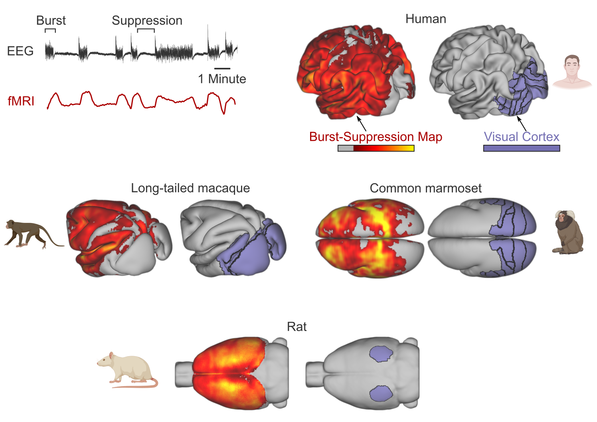
On templates and atlases
What is a brain template?
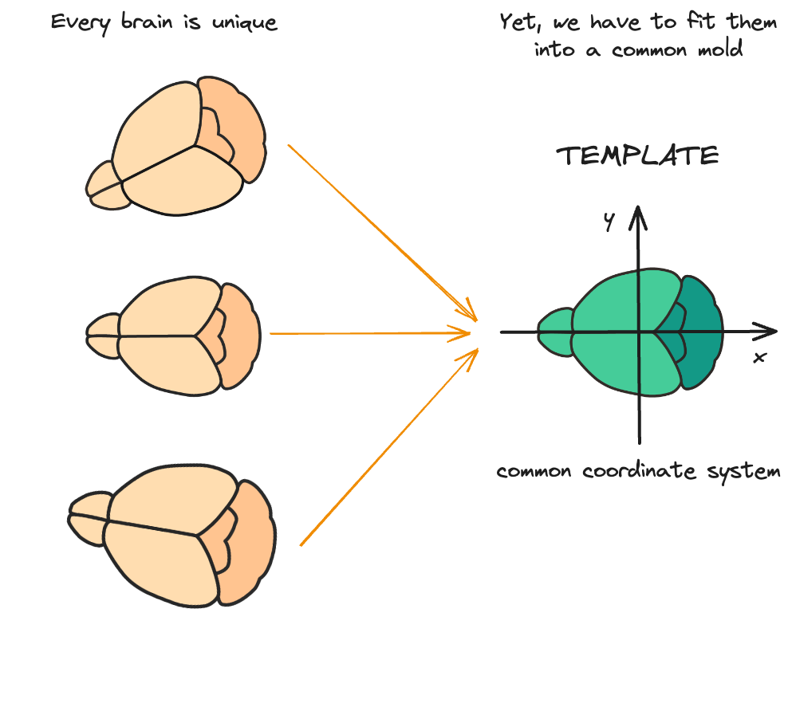
- a standard reference for brain anatomy
- a common coordinate system - a “space”
- aliases: reference, standard
Multiple reference images - same space
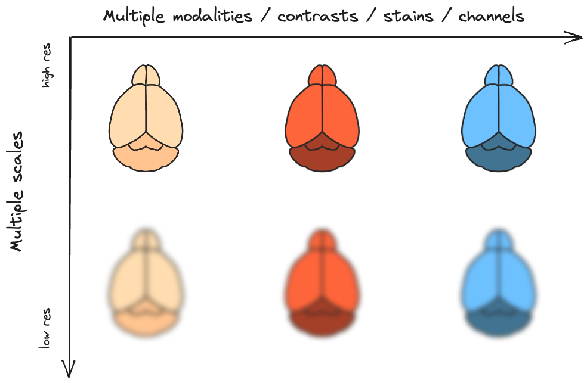
What are templates used for?
- average results from multiple subjects within a study
- compare results across studies (e.g. coordinate-based meta-analysis)
- example: Neurosynth
- measure deviations from the “norm”:
- example: Deformation-based morphometry
Some “famous” templates

What is an atlas?
A Titan condemned to hold up the heavens or sky for eternity after the Titanomachy
The most superior (first) cervical vertebra (C1) of the spine and is located in the neck.
A collection of maps; it is typically a bundle of maps of Earth or of a region of Earth.
A Brain Atlas:
is composed of serial sections along different anatomical planes of the healthy or diseased developing or adult animal or human brain where each relevant brain structure is assigned a number of coordinates to define its outline or volume. Brain atlases are contiguous, comprehensive results of visual brain mapping and may include anatomical, genetic or functional features.
Annotations
aliases: labels, regions, parcellations, segmentations, structures
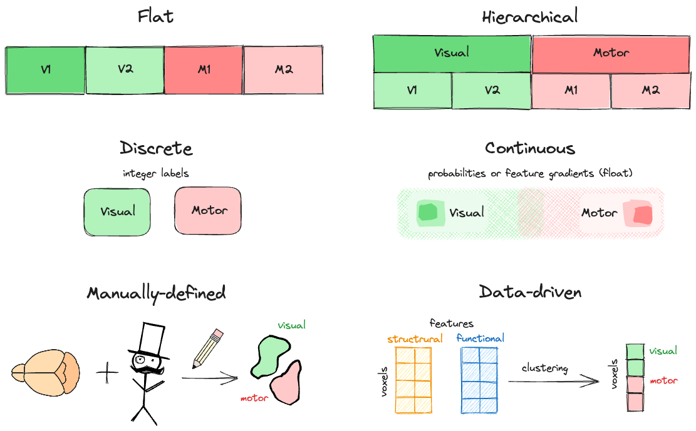
👨 Brodmann areas (1909)
👨 The HCP Multimodal Parcellation (2016)
Atlases: from minimal to comprehensive

Comprehensive
- multi-modal and/or -scale templates
- multiple/hierarchical annotations
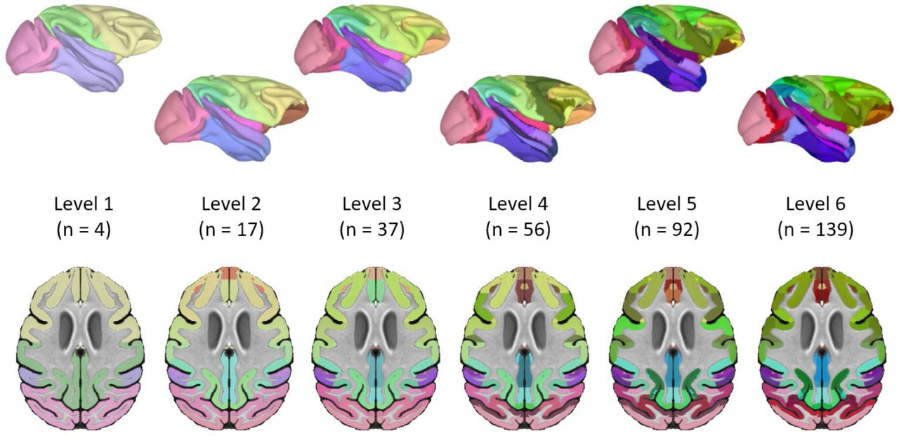
How are atlases used
Too many atlases!

Remedies
Atlases are at the heart of BrainGlobe
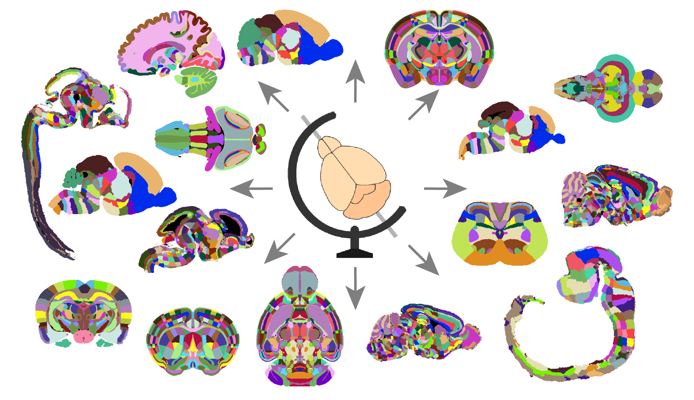
Image registration primer
Linear transformations
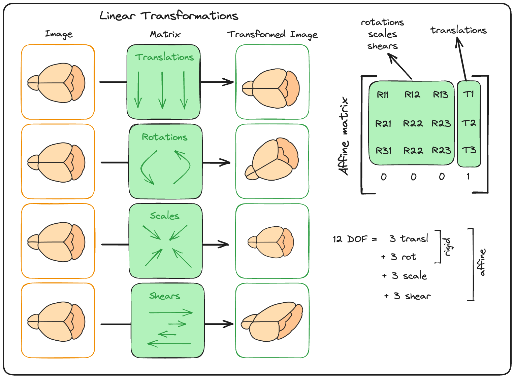
Nonlinear transformations
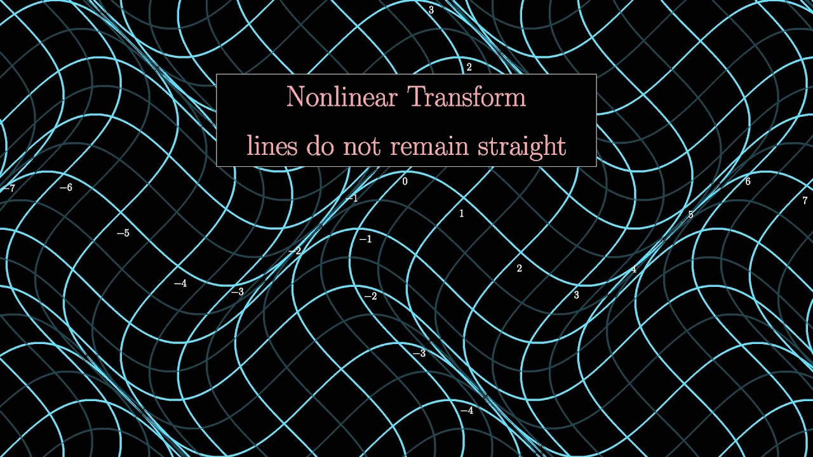
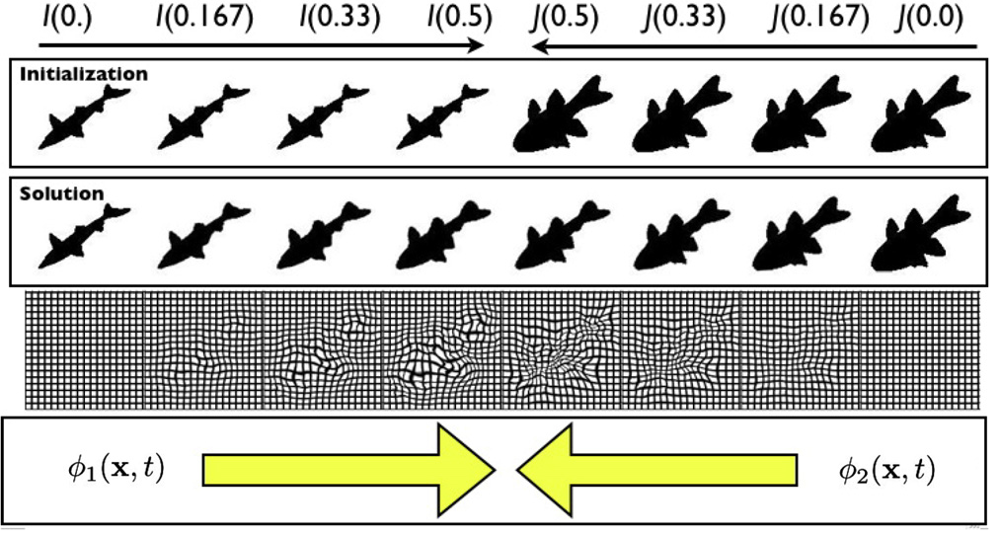
Image registration as an optimisation problem
Degrees of freedom (DOF): rigid (6), affine (12), nonlinear (n_voxels x 3)
Constraints: maximize similarity, minimize deformation
Similarity metrics: mutual information, cross-correlation etc.
Optimisation algorithms: Nowdays mostly gradient descent/ascent
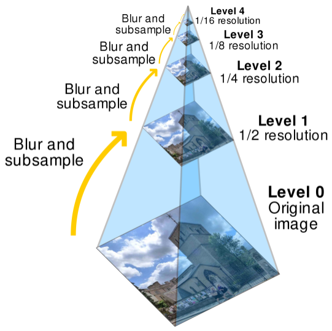
- First match rough features, then refine
- First linear, then nonlinear
- Increase DOF as we go down the pyramid
Advanced Normalisation Tools (ANTs)
- implemented in C++
- uses ITK (Insight Segmentation and Registration Toolkit)
- command-line interface
- includes the canonical SyN algorithm implementation
- provides full control over the optimisation process:
- transform types, DOF, similarity metrics, “scale pyramid” traversal, etc.
- Two main commands:
antsRegistrationandantsApplyTransforms - Provides some shell scripts for convenience:
- e.g.
antsMultivariateTemplateConstruction2.sh
- e.g.
- very powerful, but not very user-friendly
How to build a brain atlas
Building an atlas step-by-step
1. Acquire 3D whole-brain images
- Medical imaging: CT, MRI
- 3D light microscopy: STPT, fMOST, LSFM
2. Build a template
- Pick a single reference subject, or
- Build an unbiased population average
3. Annotate brain areas
- Needs manual curation from experts
- Can incorporate data-driven approaches
4. Package and distribute
- Publish on a public repository
- Make it easy to use (docs, API)
What’s our plan?
| Step | Task | Method |
|---|---|---|
| 1. | 3D whole-brain imaging | AMF + collaborating imaging facilites |
| 2. | Build a template | braiglobe-template-builder |
| 3. | Annotate regions | Collaborating experts (with napari widgets?) |
| 4. | Package for BrainGlobe | Improved bg-atlasgen (Alessandro & Viktor) |
| 5. | Distribution | bg-atlasapi |
Biased population average
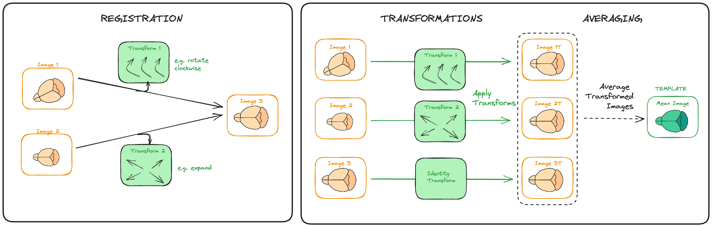
Unbiased population average
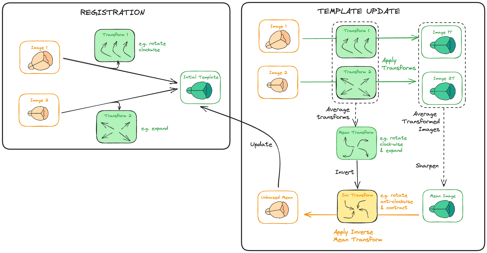
Iterative averaging sharpens image
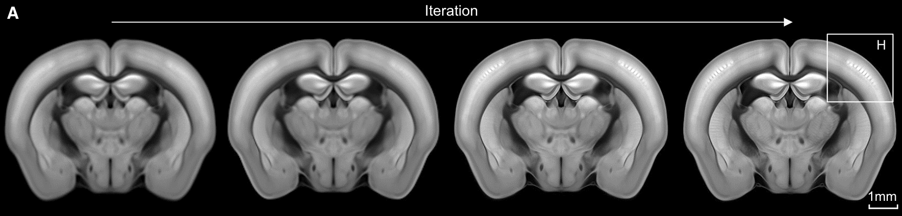Single-subject vs unbiased average
Implementations of unbiased template construction
- ANTs:
antsMultivariateTemplateConstruction2.sh(uses SyN for nonlinear registration) - optimized_antsMultivariateTemplateConstruction by CoBra Lab
- more sensible defaults to the ANTs script
- optimal traversal of “scale pyramid” (depending on image size)
- allows resuming if interrupted
- designed for parallelisation on HPC clusters (with SLURM)
- integrates masking during registration
brainglobe-template-builder
Why is it needed?
Standing on the shoulders of giants (or turtles all the way down):
brainglobe-template-builderoptimized_antsMultivariateTemplateConstructionantsMultivariateTemplateConstruction2.shANTsITK
Added value:
- GUI via napari widgets
- Preprocessing of images
- tiff > nifti conversion
- Feed into the template construction pipeline
- Visualise results (QC)
Necessary preprocessing

Demo time!

NIU team meeting | 2024-01-17